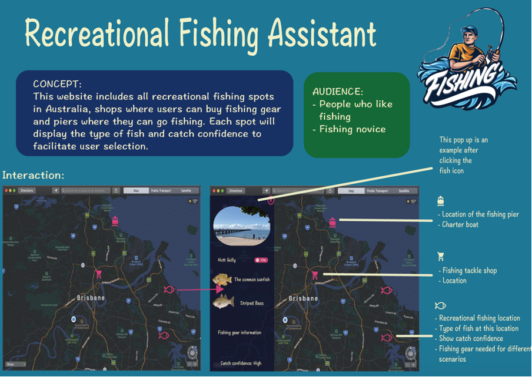
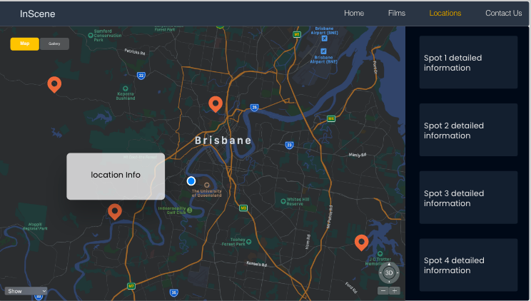
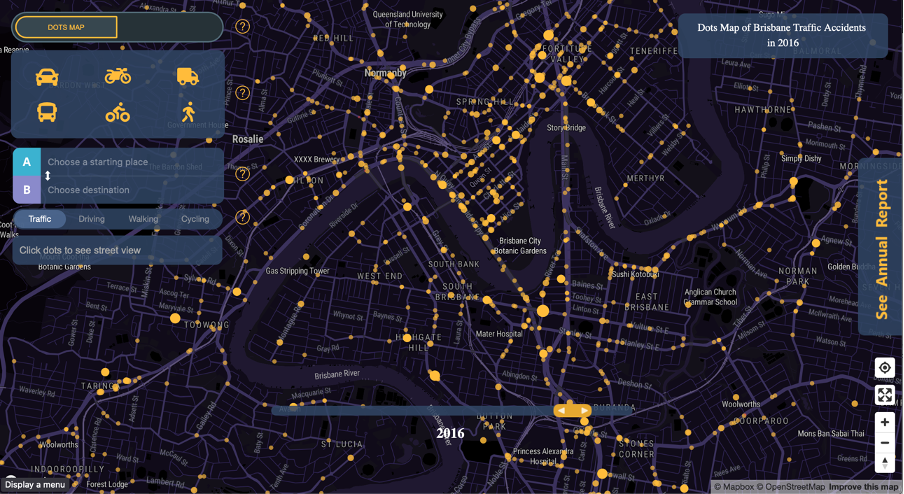

Hello! My name is Yebai from team Tenet and I am a second year master of IT student.
I’m interested in programming languages, algorithm and data structures, but I’m not an expert in any of those topics.
This semester I learned a lot of knowledge, and also developed an android app for the first time, and made many new friends.
Generally speaking, it is a very fulfilling semester.
Design Exploration

This assignment is mainly for us to provide a novel concept for the team project. Since we had already formed a team at that time,
I think there are two ways to complete this individual assignment. These two methods have different advantages for completing the team project.
The first method is that each member can use any dataset they like to do the design exploration. The advantage of this is that when preparing a team project,
we can have more alternatives (choose one from the concepts of our team members). The second one is that we can first have a meeting to discuss what dataset to use.
Let us pick a dataset that everyone is interested in, and then everyone can design the concept based on their own understanding. The advantage of this is that we can use this dataset more thoughtfully,
because we can combine everyone's ideas to get a more complete view. Our group chose the first method.
Since I am a fishing enthusiast, I would like to use Australia’s fish distribution map dataset at the beginning.
I did a research on similar products and analysed their strengths and weaknesses, so that I can combine their strengths in my concept and remove their weaknesses.
In order to better design my website and serve my target users, I made a persona, case scenarios and storyboards. Based on the analysis of the results I gained from these HCI activities,
I was able to figure out which features my web application needs.
At the beginning, I didn't plan to analyse the products from competitors, because I felt that analysis tools such as persona would be enough to design excellent products. Later,
I found it necessary to analyse other products, because I can learn from others’ excellent designs, and I should focus on the aspects they did not implement, so as to reflect the value of my products.
As for pitch (the first assessment piece required by the teaching team), I also did repeated exercises to pursue clearer and more refined expression.
Throughout the semester, my exercises had been enhancing my speech skills which lead to the result that the final pitch was relatively successful because I was fully prepared.
Reflection
I think there are still areas that can be improved. For example, my concept does not have a particularly attractive point.
I think I should browse more well-designed websites and learn their ideas to design a more attractive website.
In addition, it was the first time I use the journal to reflect on what I had learned. I think this is a very effective way of reflection.
It turned out that I didn’t think about what aspects I did not do well in the process of learning and completing the assignment.
Additionally, what aspects needed to be persistent. After my reflection, it had been indeed helping me avoid some mistakes in the following learning process.
Major Project: Part A
At the end of the first phase, we decided to use the concept of finding filming locations as the focus of our group project.
Interview ResponseOnline survey
In order to better draft the concept document, we decided to do some interviews and online surveys to help us to gain a deep understanding of our target user so that we can better design the functions of the website.
We designed interview questions and questionnaires together (each person designs 5 questions and we selected suitable questions from them together). Each team member needs to interview two people and give out 10 questionnaires.
Through the analysis of the survey results, I drew the task flow which helps us show basic working logic of our project “Inscene”.
And I drew the low fidelity prototype according to the task flow. Based on the concepts of Human Computer interaction (HCI),
I know the importance of iterations, which allows us to design products that meet users’ demands. Hence, I did a design walkthrough on the low fidelity prototype and made a medium fidelity prototype.
This prototype already has the initial design and MVP of our project, but we will also make subtle adjustments to it along with the development process.
At first, I divided the website into two main functional sections: "Nearby" and "Events" by organizing the content of interviews. "Nearby" is used to provide a filming location near the users. "Events" are used to provide movie-related activities near them.
Later, I found that there is no suitable APIs to help us realize this function. Therefore, when designing the medium fidelity prototype, I divided the main functional areas into "Films" and "Locations".
"Films" is the gallery view (including movie name and poster) of movies in the database. "Locations" will mark the coordinates of the movies on the map.
In addition, I also designed a detail page to display other information of a specific movie (plots, cast, etc.).

I used Adobe XD to draw the medium fidelity prototype, because after studying HCI, I am relatively familiar with that software.
And I use HCI related theories to design the web layout (colour theme and the size of buttons). When I drafted document,
I also explained my design ideas in detail and drew the interaction plan.
Regarding pitch preparation, we wanted our captain to complete the entire pitch. Then we saw rubric which suggested that each of us should participate in the pitch to get high marks.
Therefore, we decided that everyone should present our own part. I am responsible for the task flow, interaction plan and prototype explanation.
Since the time was limited to only 5 minutes, we allocated each person's presentation time according to the content, and then each person drafted their own script.
Before the formal presentation, our group had repeated rehearsals. Therefore, we cooperated very tacitly during the first presentation.
Reflection
I think after two iterations, my prototype is relatively complete and includes all our MVPs. It turns out that we did not make major changes to the prototype in the subsequent implementation.
The application of website colour theme and pictures is also relatively harmonious. Users can roughly understand the main functions of our website through the pictures on the homepage.
During this period, everyone expresses their opinions to make our document more perfect. The atmosphere in the group is very harmonious.
I think our document is very detailed, but each coin has two sides.
The report with 66 pages is slightly verbose. We should try our best to make our expressions concise. As for the process of the drafting document,
I am a little bit procrastinated. I always finish the part of my responsibility at the deadline set by our group.
I should finish the work as soon as possible so as not to delay the progress of our group.
Major Project: Part B
Demonstration Progress
At this stage, I am mainly responsible for developing one of the MVPs of our project, searching for the filming location by movie name.
Since there are no related APIs in the government database, I searched for third-party APIs (powered by amazon),
and one API could not retrieve all the information I wanted (movie name, poster, images, plots, coordinates, etc.) so I used a lot of APIs.
Since these APIs must be used in order (I must first obtain the movie ID to obtain other information), I have to abandon asynchronous operations, which will result in slow data search.
As for pitch, we are still responsible for the explanation of our work content and the production of the corresponding slides as the first time.
I was responsible for the explanation of the change part of the interaction plan, and the demonstration progress part (searching the filming location by the movie name).
We continued to rehearse repeatedly after writing the script. But we still had unexpected situations during the presentation. One of our team members had a technical issue.
Since we practiced many times, other team members naturally helped her complete that part of the demo. However, due to lack of preparation, we still cannot present that part comprehensively.
Therefore, I reflected in the journal after the demo, maybe we should have prepared the parts that assigning two people to present our demo, so as to prevent similar situations,
but also reflect the advantages of teamwork (not having to demo all parts by one person). During this semester, I also had some slack times, but every time I reflected on it through the journal,
it reminded me that my expectations at the beginning of the semester had not been fully realized. I would be filled with motivation again.
Reflection
Generally speaking, our demo is still successful, because although there is a technical issue,
thanks to our repeated practices, we were relatively easy to make up for this defect.
Maybe we should rehearse where demo is needed next time (demo took place via Discord but our rehearsal was conducted via Zoom).
What is more, if there is enough time and funding, I think we can combine these APIs to generate an API that meets our needs better,
which will speed up data search for the site.
Major Project: Part C
After we finished the part B demo, we would like to increase the interaction between users, so we plan to increase user login and videos uploading to enrich the website functions.
We used the PHP framework (CodeIgniter), because most people in our group have CodeIgniter programming experiences. At this stage, my task is to merge my code into our project and
deploy our project to Nginx. I modified the Nginx config file, but it was not successful. Therefore, I could just let Nginx load the index.php file and immediately jump to the index.html file of our project.
And I found that the most difficult part is to merge our code together after multiple people develop together. I just discovered the importance of code style, reasonable variable naming and comments.
Different search content demo
I divide the search content into three categories:
If users search for the exact movie name on the homepage, the filming location of the film will be displayed on the map, and the specific location details of the film will be displayed on the right.
The API will provide a fuzzy search function, which can provide a certain error handling. If the name searched by the user is similar to the data stored in the API,
the API will return the movie-related information that is closest to the search content.
I have done the corresponding error handling function ourselves. If the user searches by key words that have no actual meanings (“hafkhadkjifhadlskfhlk” in this case),
there will be a pop-up window prompting the user to try another keyword, and the page will return to the homepage.
In the demo I am responsible for explaining all the functions of our project. We still did many rehearsals. The demo process is also very smooth.
During the demo, I also visited the works of other groups. I was deeply touched by some of the features and their imagination was very rich.
Especially a work describing Brisbane traffic accidents. The data visualization of this work is perfect.

Brisbane traffic accidents
Reflection
I think it was still very successful. We not only presented to tutors but also demoed to many classmates and received a lot of positive feedback.
If I have more time, I think I need to think about why some posters in the government dataset cannot be loaded.
Portfolio
I think web-based portfolio is more challenging than pure word-based portfolio.
This can better reflect the comprehensive use of HTML, CSS and JavaScript, and this portfolio is more colourful.
Firstly, I recorded all the text I wanted to write, the pictures and videos I wanted to show with word, then considering the overall layout and effects that I want to use.
At first, I wanted to write the content while coding the effects, but after I finished writing "About Me",
I found that it was difficult to make a neat layout if the length of the text and the number of pictures were not clear.
Reflection
I think the portfolio is still relatively successful, and actually there is not much time left to write this portfolio. At the same time, I still have an exam and another portfolio to write.
This portfolio has also exercised my ability to use time wisely. If I have more time, I think I will make the web more beautiful.
Course Reflection
This course met my expectations. It let me practice using APIs, I also learned more JavaScript usage, and also learned more useful JavaScript plugins.
I also made many new friends and had a pleasant teamwork experience.
The most important thing is that this course tells me how to use APIs. Although I originally knew the terminologies, JSON and API,
I never used them in the project. Now I am more familiar with these technologies. And when I use it, I feel more confident than when I learned DECO7140 in the first semester.
In addition, I rarely used JavaScript plugins until I did a web-based portfolio. I also saw a lot of technologies from other groups at the trade show, and it gave me some ideas for future websites coding.
What I regret most is that I have to take online classes this semester. I think face-to-face teaching must be much better than using Discord, especially in the trade show.
Teammates can wear the same T-shirt to present their projects to other people. Maybe then we will have better communication. I like this course very much.
Originally, I didn't want to give presentations to others. This time rubric push me to try demo and present, and it forced me to step out of my comfort zone and helped me make progress.
Thanks to everyone in this class, I really had a great time.
References
Mark Otto, a. Bootstrap. Retrieved 12 November 2020, from https://getbootstrap.com/
Google Fonts. Retrieved 12 November 2020, from https://fonts.google.com/
mattboldt/typed.js. Retrieved 12 November 2020, from https://github.com/mattboldt/typed.js/